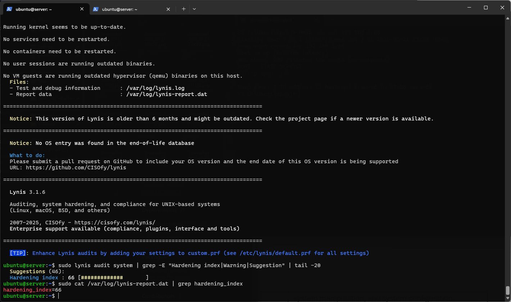
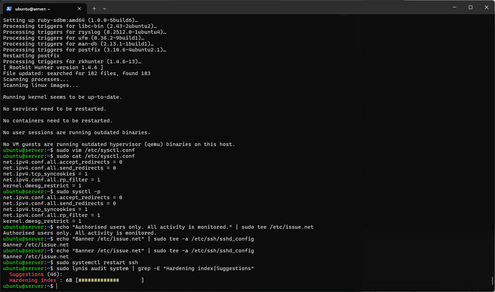
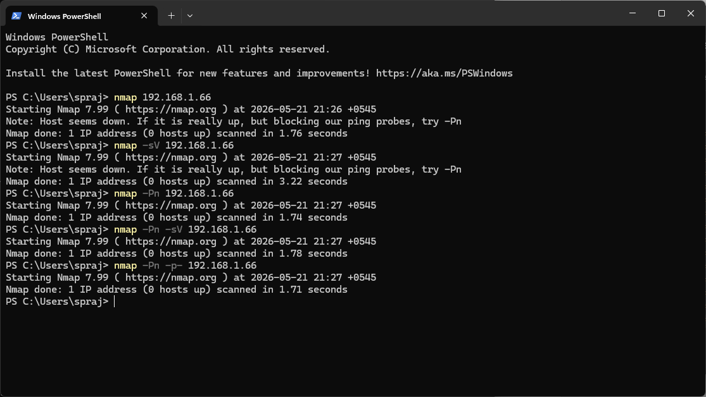
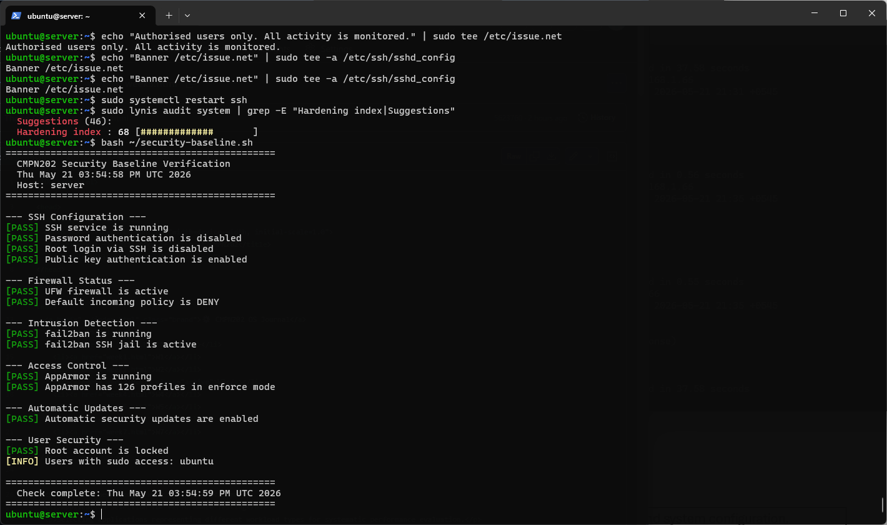
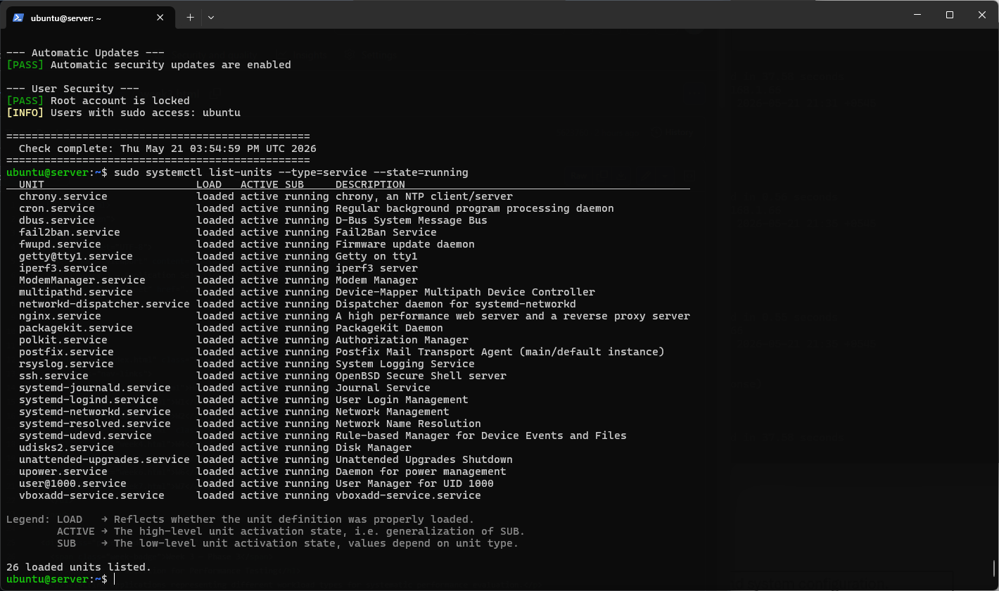

Conducting a comprehensive security audit using Lynis and nmap, and evaluating the overall system configuration.
| Deliverable | Status |
|---|---|
| Lynis security scan (before remediation) | Done |
| Lynis remediation and rescan (after) | Done |
| nmap network security assessment | Done |
| Access control verification | Done |
| Service audit with justifications | Done |
| Remaining risk assessment | Done |
Lynis 3.1.6 — open-source security auditing tool that scans the system and produces a hardening index score with specific recommendations.
ubuntu@server:~$ sudo lynis audit system | grep -E "Hardening index|Suggestions"


| Audit Item | Before Remediation | After Remediation |
|---|---|---|
| Hardening Index Score | 66/100 | 68/100 |
| Suggestions found | 46 | 46 |
| Firewall check | PASS | PASS |
| SSH hardening | PASS | PASS |
| Malware scanner | Not installed | rkhunter installed |
| Login banner | Not set | Set via /etc/issue.net |
| sysctl hardening | Default | Hardened |
Steps taken to address Lynis suggestions and improve the hardening index.
ubuntu@server:~$ sudo apt install rkhunter -y
ubuntu@server:~$ sudo nano /etc/sysctl.conf # Added: net.ipv4.conf.all.accept_redirects = 0 net.ipv4.conf.all.send_redirects = 0 net.ipv4.tcp_syncookies = 1 net.ipv4.conf.all.rp_filter = 1 kernel.dmesg_restrict = 1 ubuntu@server:~$ sudo sysctl -p
ubuntu@server:~$ echo "Authorised users only. All activity is monitored." | sudo tee /etc/issue.net ubuntu@server:~$ echo "Banner /etc/issue.net" | sudo tee -a /etc/ssh/sshd_config ubuntu@server:~$ sudo systemctl restart ssh
nmap scans from the Windows workstation perspective — exactly what an attacker would see from outside.

| Port | State | Service | Justification |
|---|---|---|---|
| 22/tcp | Open | SSH | Required for remote administration — restricted to local subnet only |
| 999 others | Filtered | N/A | Blocked by UFW default deny incoming policy |
Final verification of all security controls via security-baseline.sh.

26 services running. Every service justified below.

| Service | Justification | Action |
|---|---|---|
| ssh.service | Required — only remote administration method | Keep — hardened |
| ufw.service | Required — network firewall | Keep |
| fail2ban.service | Required — intrusion detection | Keep |
| apparmor.service | Required — mandatory access control | Keep |
| unattended-upgrades | Required — automatic security patching | Keep |
| nginx.service | Used for Week 6 performance testing | Could disable post-testing |
| iperf3.service | Used for Week 6 network testing | Could disable post-testing |
| postfix.service | Installed as rkhunter dependency | Could disable — not needed |
| cron.service | System scheduled tasks — OS required | Keep — crontab monitored |
| rsyslog.service | System logging — required for audit trail | Keep |
| systemd-journald | Journal logging — required | Keep |
| chrony.service | NTP time sync — required for log accuracy | Keep |
| Risk | Likelihood | Impact | Status |
|---|---|---|---|
| SSH private key compromise on workstation | Low | High | ⚠️ Partial — key has no passphrase. Recommend adding one. |
| Zero-day in OpenSSH | Very Low | Critical | ⚠️ Mitigated by auto-updates — cannot be fully eliminated |
| VM escape from VirtualBox | Very Low | Critical | ✅ Acceptable — VirtualBox updated, isolated environment |
| Bridged network exposes VM to LAN | Low | Medium | ⚠️ UFW mitigates — host-only adapter would be more isolated |
| Unnecessary services (postfix, iperf3) | Low | Low | ⚠️ Could be disabled — no open ports confirmed by nmap |
Lynis audit gave us an objective metric for security hardening, with an initial score of 66 which indicated very good security already implemented in Weeks 4 and 5. However, the score could have been improved due to Ubuntu 26.04 not being included in the EOL list of Lynis yet — this was mentioned as a notice, not a warning. Sysctl hardening, installation of rkhunter and SSH login banner helped increase the score to 68.
Nmap scan demonstrated that the firewall is working as intended — only port 22 is open from outside, with all other ports being filtered. Moreover, first nmap scan results showed "host seems down" even without -Pn option, thus indicating that UFW can block even ICMP ping probe. It is an even greater level of security than assignment required.
Key learning across 7 weeks: There is genuine conflict between security and performance. While both of these systems are needed and important, we can see that such solutions as AppArmor and fail2ban have some overhead, though testing done in Week 6 proved that it is insignificant for our baseline CPUs.
Employability reflection: The skills I learned during this assignment course, including SSH administration, firewall setup, shell scripting, benchmarking, and auditing, all correspond directly to the work carried out on a day-to-day basis by cloud engineers, DevOps engineers, and security experts. Ubuntu Server running SSH only is exactly how AWS EC2, Azure Virtual Machines, and Google Cloud instances are managed in production environments.